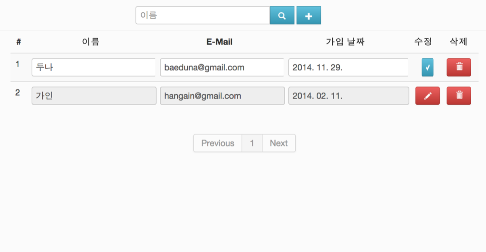

화려한 UI를 위한 Animiation 처리 알아보기
애니메이션 적용하기
AngularJS에서 애니메이션 기능을 사용하기 위해서는 ngAnimate 모듈을 사용해야 한다. ngAnimate 모듈은 angular-animate.js를 통해 제공된다. 그래서 해당 자바스크립트 파일을 angular.js 다음으로 스크립트 태그를 이용해서 로드해야한다. 그럼 AngularJS Getting Start에서 만들었던 사용자관리 웹 어플리케이션에 애니메이션 기능을 적용해보자. 우선 index.html 파일에 다음과 같이 angular-animate.js 파일을 추가한다.
<head>
<meta charset="UTF-8">
<title>사용자 관리 DEMO APP</title>
<link rel="stylesheet" href="libs/bootstrap/css/bootstrap.min.css">
<link rel="stylesheet" href="resources/app.css">
<script type="text/javascript" src="libs/angular/angular.js"></script>
<script type="text/javascript" src="libs/angular/angular-animate.js"></script>
<!-- 애니메이션 기능을 위해 angular-animate.js 파일을 추가해 준다. -->
<script type="text/javascript" src="libs/angular/angular-cookies.js"></script>
<script type="text/javascript" src="libs/ui-bootstrap/ui-bootstrap-0.8.0.js"></script>
<script type="text/javascript" src="libs/ui-bootstrap/ui-bootstrap-tpls-0.8.0.js"></script>
<script type="text/javascript" src="app.js"></script>
</head>다음으로 app.js에서 모듈을 선언한 부분에 ngAnimate 모듈 디펜던시를 추가한다.
angular.module('userMgnt', ['ngCookies','ui.bootstrap',’ngAnimate’])ngAnimate 모듈을 적용하고 브라우저에서 사용자관리 웹 어플리케이션을 다시 읽으면 아무런 변화가 없는 것을 알 수 있다. 애니메이션이 동작하는 것을 보려면 어떻게 DOM 요소를 움직이게 할 지 정의를 해야 한다. 이때 우리는 CSS 트랜지션과 키프레임 애니메이션을 이용하여 애니메이션을 CSS로 정의할 수 있다. CSS 트랜지션과 키프레임 애니메이션은 CSS3에서 포함되었고 현재 인터넷 익스프플로어 10이상과 다른 모든 브라우저에서 지원한다.
AngularJS는 CSS3 애니메이션을 이용해서 애니메이션 처리를 하는데 대다수의 지시자들은 애니메이션 처리를 자동으로 지원하고 사용자 정의 지시자는 애니메이션을 위한 $animate 서비스를 통해 처리할 수 있다. 예를 들면 ngRepeat 지시자는 DOM 요소가 추가되면 .ng-enter CSS 클래스를 추가하고 이를 enter 이벤트라고 정의한다. 마찬가지로 DOM 요소의 순서가 변경되면 move 이벤트가 발생하였다고 하고 .ng-move CSS 클래스를 추가한다. 마지막으로 DOM 요소가 삭제되면 .ng-leave CSS 클래스가 추가된다. 이렇게 추가된 CSS 클래스를 이용해서 CSS 애니메이션을 정의할 수 있다. 다음 표는 AngularJS가 자동으로 애니메이션을 지원하는 지시자들을 나타낸다.
| 지시자 | 이벤트 | 시작 CSS 클래스 | 종료 CSS 클래스 |
|---|---|---|---|
| ngRepeat | enter, leave, move | .ng-enter,.ng-leave,.ng-move | .ng-enter-active,.ng-leave-active,ng-move-active |
| ngVIew | enter, leave | .ng-enter, .ng-leave | .ng-enter-active, .ng-leave-active |
| ngInclude | enter, leave | .ng-enter, .ng-leave | .ng-enter-active,.ng-leave-active |
| ngSwitch | enter, leave | .ng-enter, .ng-leave | .ng-enter-active, .ng-leave-active |
| ngIf | enter, leave | .ng-enter, .ng-leave | .ng-enter-active, .ng-leave-active |
| ngClass | add, remove (추가된 클래스가 add되거나 remove 되는 이벤트) |
.추가된 클래스-add, .추가된 클래스-remove | .추가된 클래스-add-active, .추가된 클래스-remove-active |
| ngShow, ngHide |
add, remove (ng-hide 클래스가 addd되거나 remove 되는 이벤트) |
.ng-hide-add .ng-hide-remove | .ng-hide-add-active .ng-hide-remove-active |
위 표를 보면 시작 CSS 클래스와 종료 CSS 클래스가 있다. 종료 CSS 클래스는 CSS3 트랜지션 처리시 필요하고 이는 다음 이어질 CSS3 트랜지션에서 자세히 보도록 하겠다.
CSS 트랜지션 적용하기
일반적으로 CSS 속성의 값이 변경될 때 변경된 값은 즉시 적용된다. 가령 투명도가 0이었는데 해당 CSS가 적용된 DOM 요소 위에 마우스를 올라갔을 때(hover) 투명도를 1로 변경 한다고 하자. 이를 코드로 나타내면 아래와 같다.
.my-div {
opacity: 0;
}
.my-div:hover {
opacity: 1;
}.my-div 클래스가 적용된 DOM 요소에 마우스 커서가 올리면 해당 DOM 요소의 투명도가 0이 되면서 바로 안보이게 된다. 하지만 투명도를 2초간 서서히 줄이면서 안보이게 하고 싶다고 하면 이때 우리는 CSS 트랜지션이 적용할 수 있다. 즉, CSS 트랜지션은 CSS 속성이 변경되는 것을 일정한 기간을 주어 즉시 변경이 되는 것이 아니라 기간 동안 타임 함수에 의하여 변경되도록 한다. 다음 코드는 트랜지션을 적용한 코드이다.
.my-div {
-webkit-transition: opacity 0.6s ease;
//웹킷 브라우저용 prefix를 적용하였다.
transition: opacity 0.6s ease;
//0.6초동안 opacity 속성에 트렌지션을 적용한다. 타이밍 함수는 ease를 적용하였다.
opacity: 0;
}
.my-div:hover {
opacity: 1;
}AngularJS의 애니메이션은 위와 같은 CSS 트랜지션을 이용하여 애니메이션 처리를 할 수 있다. 앞에서 봤듯이 CSS 트랜지션에는 속성 값이 변경 전 초기 값이 있고 변경이 완료된 값이 있다. 그래서 AngularJS가 정의한 시작 CSS 클래스에 변경 전 초기 값을 입력하면 되고 종료 CSS 클래스에 변경하고자 하는 완료된 속성값을 작성하면 CSS 트랜지션을 이용하여 애니메이션 처리가 된다.
그럼 사용자관리 웹 어플리케이션에서 수정, 수정완료 버튼에 간단히 CSS 트랜지션을 이용해서 애니메이션을 추가해보자. 우선 index.html 파일에서 애니메이션을 적용할 대상에 CSS 클래스를 부여한다.
<!-- 생략 -->
<td class="center btn-container">
<!-- 3D 처리를 위해 버튼 컨테이너 클래스를 추가한다. -->
<button class="btn btn-danger ani-button" class="" ng-show="!user.edit" ng-click="edit(user)">
<!-- AngularJS 애니메이션 처리를 위해서 대상 DOM 요소에 CSS 클래스를 정의해 준다. 해당 클래스에 .ng-이벤트, .ng-이벤트-active 클래스와 함께 애니메이션 정의를 한다. -->
<i class='icon-white icon-pencil'></i>
</button>
<button class="btn btn-info ani-button" ng-show="user.edit" type="button" ng-click="complete(user)">
<!-- 위와 마찬가지로 AngularJS 애니메이션 처리를 위해서 대상 DOM 요소에 CSS 클래스를 정의해 준다. -->
<i class='icon-white icon-ok'></i>
</button>
</td>
<td class="center">
<button class="btn btn-danger" type="button" ng-click="del($index)">
<i class='icon-white icon-trash'></i>
</button>
</td>
<!-- 생략 -->이제 실제 CSS 트랜지션 처리를 위해 animation.css 파일을 다음과 같이 작성한다.
.btn-container{
position: relative;
}
.ani-button {
z-index: 2;
-webkit-transform: rotateY(0deg);
-ms-transform: rotateY(0deg);
-o-transform: rotateY(0deg);
transform: rotateY(0deg);
//CSS의 transform을 이용하여 초기 상태를 Y축으로 0도로 회전시킨다.
position: absolute;
top: 8px;
left: 12px;
}
.ani-button.ng-hide-remove{
//ngShow/ngHide 지시자는 적용된 DOM 요소가 안보이게 될 때 .ng-hide 클래스를 추가한다. 그리고 다시 보이게 될 때 .ng-hide를 제거하는데 제거 되기 직전에 .ng-hide-remove 클래스가 추가되게 된다. 이때 트랜지션 초기상태를 정의할 수 있다.
-webkit-transition: 0.6s;
-o-transition: 0.6s;
transition: 0.6s;
//CSS Transition을 0.6초 동안 모든 속성의 변경값을 변경되도록 설정한다.
-webkit-transform-style: preserve-3d;
-moz-transform-style: preserve-3d;
-ms-transform-style: preserve-3d;
transform-style: preserve-3d;
position: absolute;
top: 8px;
left: 12px;
}
.ani-button.ng-hide{
//ngShow/ngHide 지시자가 속성으로 사용되어 해당 속성값의 표현식의 결과가 false/true가 되면 .ng-hide 클래스가 추가된다. 그때 해당 CSS 규칙이 적용된다.
-webkit-transform: rotateY(90deg);
-ms-transform: rotateY(90deg);
-o-transform: rotateY(90deg);
transform: rotateY(90deg);
//transform을 이용하여 Y축으로 90도 회전시킨다.
}사용자관리 웹 어플리케이션을 브라우저에서 다시 확인해보자.

앞의 그림과 같이 테이블 각 행의 왼쪽에 있는 수정/수정완료 버튼을 클릭하면 Y축으로 회전이 되면서 수정 버튼이 안보이고 수정완료 버튼이 안보이게 되는 애니메이션을 확인할 수 있을 것이다. 다음으로 CSS 키프레임 애니메이션에 대하여 살펴보자.
CSS 키프레임 애니메이션 적용하기
CSS 키프레임 애니메이션은 정해진 시간분할을 퍼센트지(%)로 표현하여 각 분활 된 시간에 따른 애니메이션을 정의할 수 있다. 트랜지션과는 다르게 시작과 끝에 따른 CSS 클래스가 필요 없고 시작 CSS에 적용할 animation-name 속성으로 키프레임을 지정해주면 된다.
그럼 사용자관리 웹 어플리케이션에서 데이터를 테이블로 표현하기 위해 사용한 ngRepeat 지시자에 애니메이션 처리를 추가해보자. 우선 index.html 파일에서 ngRepeat 지시자가 추가된 DOM 요소에 애니메이션 처리에 필요한 클래스 이름을 추가해보자.
<table class="table table-striped table-hover">
<thead>
<tr>
<th>#</th>
<th>이름</th>
<th>E-Mail</th>
<th>가입 날짜</th>
<th>수정</th>
<th>삭제</th>
</tr>
</thead>
<tbody>
<tr class="ani-repeat" ng-repeat="user in userList">
<!-- AngularJS 애니메이션 처리를 위해서 대상 DOM 요소에 CSS 클래스를 정의해 준다. -->
<!-- 생략 -->
<tr>
</tbody>다음으로 animation.css에 키프레임 애니메이션을 추가하자. 사용자 태이블의 행을 추가하거나 삭제할 때 행이 바로 추가되거나 삭제되지 않고 애니메이션을 적용해 행이 추가되면 투명도가 서서히 밝아지고 삭제하면 서서히 흐려지도록 한다. 이때 우리는 @keyframes을 이용해서 키프레임을 정의하는데 투명도가 서서히 밝아지는 opacity-bright-animation과 서서히 어두워지는 opacity-dim-animaiton을 키프레임으로 작성할 수 있다.
@keyframes opacity-bright-animation {
from { opacity:0; }
to { opacity:1; }
}
@keyframes opacity-dim-animation {
from { opacity:1; }
to { opacity:0; }
}작성된 키프레임은 AngularJS 애니메이션 이벤트에 해당하는 시작 CSS 클래스에서 animation 속성에 사용되어 특정 애니메이션 이벤트가 시작할 때 키프레임을 적용하게 된다. CSS 트랜지션과는 다르게 종료 CSS 클래스가 사용되지 않는다. 다음은 키프레임 애니메이션이 추가된 animation.css 내용이다.
.ani-repeat.ng-enter {
DOM 요소가 새로 추가되면 enter 이벤트가 발생하고 .ng-enter CSS 클래스가 해당 DOM 요소에 추가된다. 이때 animation 속성으로 어떤 키프레임을 특정 기간 동안 적용할 지 작성한다.
-webkit-animation: 0.5s opacity-bright-animation;
animation: 0.5s opacity-bright-animation;
}
.ani-repeat.ng-leave {
DOM 요소가 삭제되면 leave 이벤트가 발생하고 .ng-leave CSS 클래스가 해당 DOM 요소에 추가된다. 이때 animation 속성으로 어떤 키프레임을 특정 기간 동안 적용할 지 작성한다.
-webkit-animation: 0.5s opacity-dim-animation;
animation: 0.5s opacity-dim-animation;
}
.ani-repeat.ng-move {
DOM 요소가 이동하면 move 이벤트가 발생하고 .ng-enter CSS 클래스가 해당 DOM 요소에 추가된다. 이때 animation 속성으로 어떤 키프레임을 특정 기간 동안 적용할 지 작성한다.
-webkit-animation: 0.5s opacity-bright-animation;
animation: 0.5s opacity-bright-animation;
}
@keyframes opacity-bright-animation {
투명도를 0에서 1로 변경하는 키프레임을 정의한다.
from { opacity:0; }
to { opacity:1; }
}
@-webkit-keyframes opacity-bright-animation {
웹킷 브라우저용 접두어를 주어 해당 브라우저에 CSS 규칙이 적용되게 한다.
from { opacity:0; }
to { opacity:1; }
}
@keyframes opacity-dim-animation {
투명도를 1에서 0로 변경하는 키프레임을 정의한다.
from { opacity:1; }
to { opacity:0; }
}
@-webkit-keyframes opacity-dim-animation {
웹킷 브라우저용 접두어를 주어 해당 브라우저에 CSS 규칙이 적용되게 한다.
from { opacity:1; }
to { opacity:0; }
}이제 사용자관리 웹 어플리케이션을 브라우저에서 다시 확인하고 새로운 사용자를 추가하면 다음 그림과 같이 새로운 행이 서서히 밝아지면서 추가되는 것을 확인할 수 있을 것이다.